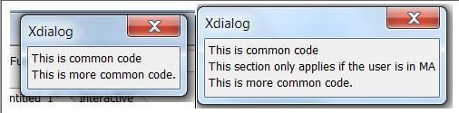
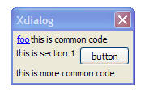
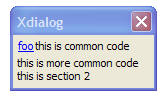

Xdialog - Modifying Xdialogs at Run-time Before the Xdialog is Rendered
The layout of an Xdialog is defined by a string variable. This makes it easy to write an Xbasic script that generates an Xdialog, or modifies one before it is rendered.
Two new Xdialog commands make creating dynamic Xdialogs even easier.
- {staticConditionalSection:sectionNumber:conditionExpression}/{end_staticConditionalSection:sectionNumber} - Is used when a section of an Xdialog should only be displayed when a conditionExpression is true. The condition is evaluated before the Xdialog is rendered (hence the term 'static' in the command name), so if the condition changes state AFTER the Xdialog has been rendered, it will have no effect on the Xdialog. If the condition is false, the space taken up by the markup in the excluded section is not show.
- {staticConditionalInclude:XdialogStringVariable:conditionExpression} - Is used to dynamically include some Xdialog markup (contained in a variable called XdialogStringVariable) into the Xdialog if a conditionExpression is true.
Example of {staticConditionalSection} Command
If the variable, 'state' is 'MA', the dialog on the right will be shown. If the 'state' is not 'MA', the dialog on the left will be shown.
You can have as many conditional sections as you want.
ui_dlg_box("Xdialog",<<%dlg%
This is common code;
{staticConditionalSection:1:state="MA"}
This section only applies if the user is in MA;
{end_staticConditionalSection:1}
This is more common code.;
%dlg%

Contrast this example with the {condition_begin}/{condition_end} Xdialog command which can also dynamically hide/show sections of an Xdialog. The {condition_begin} command does not eliminate the space taken up by hidden sections (unless the {start_pos} command is also used). On the other hand, {condition_begin} evaluates the conditions after the Xdialog has been rendered - so changes in the condition expression dynamically affect the appearance of the Xdialog.
Example of{staticConditionalInclude} Command
Consider the following script. The variables, 'section1' and 'section2' both contain some Xdialog markup. If mode = "A" the markup in 'section1' is included in the Xdialog. If mode = "B", the markup in 'section2' is included in the Xdialog.
section1 = "this is section 1 <button>;"
section2 = "this is section 2"
mode = "B"
dlg = <<%dlg%
{hyperlink=foo!foo}
this is common code;
{staticConditionalInclude:section1:mode="a"}
this is more common code
{staticConditionalInclude:section2:mode="b"}
%dlg%
ui_dlg_box("Xdialog",dlg)
Here is how the Xdialog renders if mode = "A"

Here is how the Xdialog renders if mode = "B"

Note: The {staticConditionalInclude} command is recursive. This means that the Xdialog markup that is dynamically included can also contain static conditional sections, as demonstrated by this script:
section1 = <<%dlg%
this is section 1 <button>;
{staticConditionalInclude:subsection1:submode="a"}
%dlg%
section2 = "this is section 2"
subsection1 = "this is subsection 1 <button2>;"
submode = "a"
mode = "a"
dlg = <<%dlg%
{hyperlink=foo!foo};
this is common code;
{staticConditionalInclude:section1:mode="a"}
this is more common code
{staticConditionalInclude:section2:mode="b"}
%dlg%
ui_dlg_box("",dlg)